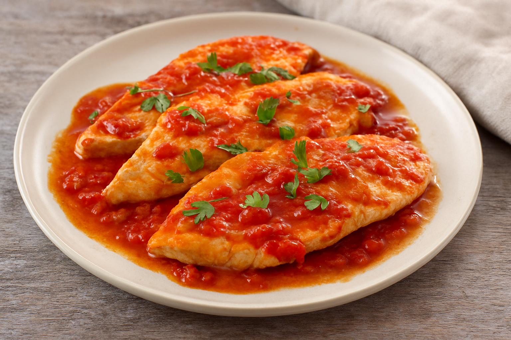

Filetto al Pepe Verde
Un secondo piatto raffinato dal gusto deciso, perfetto per chi ama i sapori intensi ma equilibrati.

Scaloppine al Limone
Fettine di carne dorate al burro con delicata salsa al limone.

Pollo alla Pizzaiola
Un secondo piatto semplice e ricco di gusto, ispirato ai sapori tipici della cucina mediterranea.